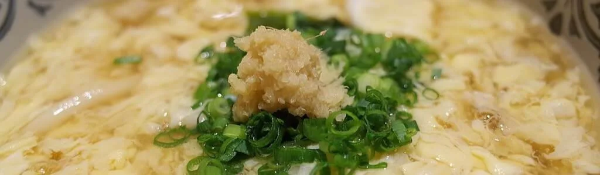

This warm soup is excellent as an appetizer or entree for lunch or dinner! The rich savory flavor of the viscous soup base paired with ribbons of egg and the sweet corn is sure to impress!
Required Materials
Ingredients
- 5½ cups chicken stock – divided, 5 cups & ½ cup
- 2 eggs
- 1½ cup fresh or frozen sweet corn – divided, 1 cup & ½ cup
- ¼ cup cornstarch
- ½ teaspoon toasted sesame oil
- 1 tablespoon water
- ½ teaspoon salt
- 1 pinch white pepper
- 1 pinch black pepper – optional
- ½ teaspoon turmeric powder – optional, coloring agent
- 1 scallion – optional
Kitchenware
- Stove
- Soup pot
- Bowl
- Spoon
- Knife
- Imperial measurement cups & spoons
Instructions
- If using frozen corn, thaw ½ cup of the corn kernels , then finely mince ½ cup of the corn kernels.
- Add 5 cups of chicken stock, minced and whole corn kernels, and turmeric powder to the soup pot, bring to a low boil, and then reduce the heat and simmer for 10 minutes.
- Add the sesame oil, salt, and white pepper, stir.
- Mix the cornstarch and the remaining ½ cup of chicken stock together in a small bowl, ensuring that they are well mixed. – see note 1
- Immediately after, slowly pour the mix of cornstarch and stock while stirring the soup, keep sitting for about 30 seconds afterwards. – see note 2
- Beat both eggs in a bowl. – see note 3
- Gently stir the soup in a single direction, and in a large circular motion, and begin slowly pouring the beaten eggs into the soup. – see note 4
- Stir in half of the scallions if included.
- Remove from heat and serve, optionally garnish with the remaining scallions, and/or black pepper.
Notes
- The cornstarch mix will settle very quickly so make sure that you stir it immediately before pouring into the soup.
- The amount of cornstarch mix will influence the thickness of the soup, with more of the mix increasing how viscous it is. Increase or decrease to preference.
- Egg yolks are optional.
- Slowly stirring will yield large ribbons of eggs, while faster stirring will create strings of egg.